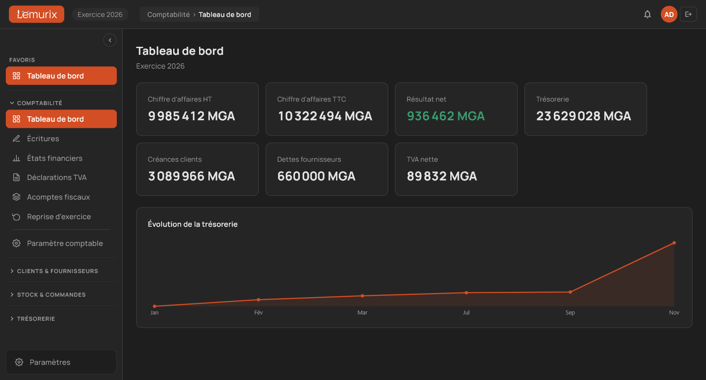
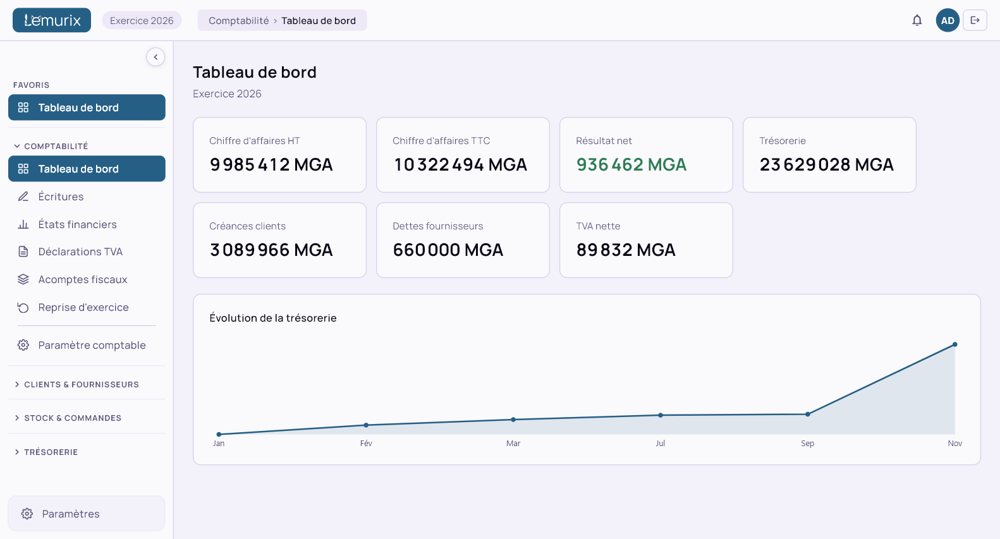
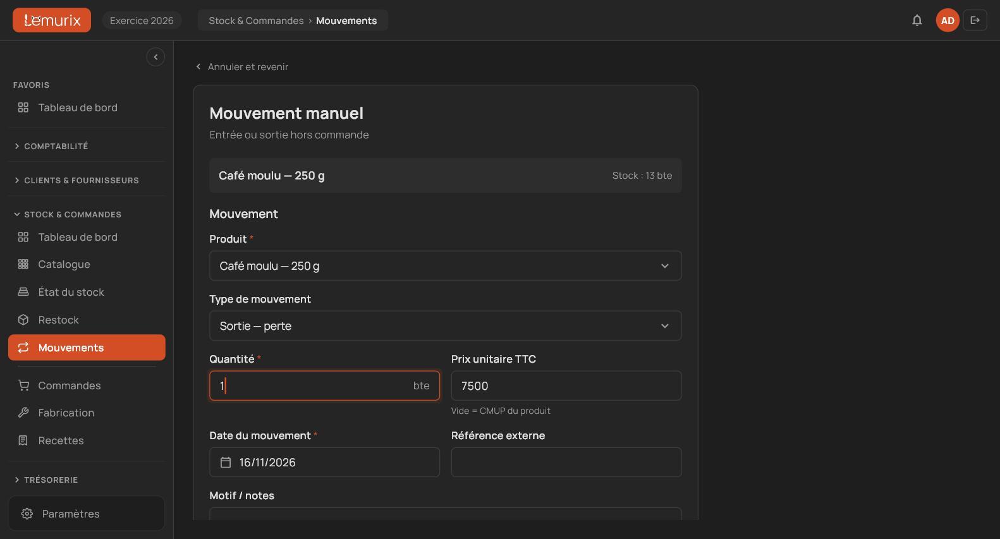
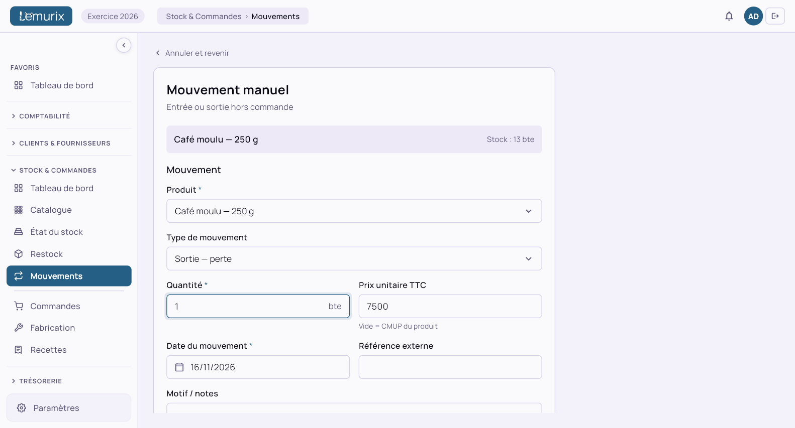
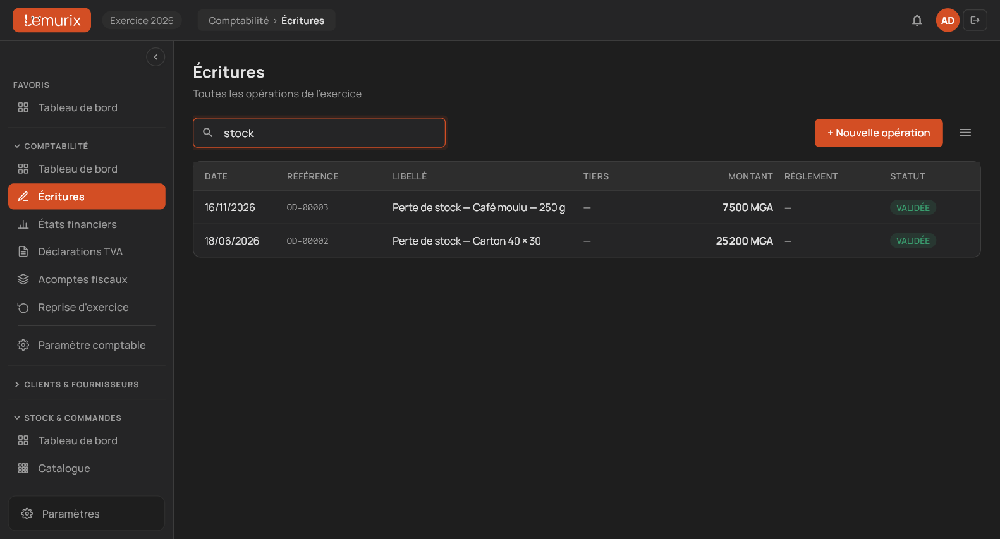
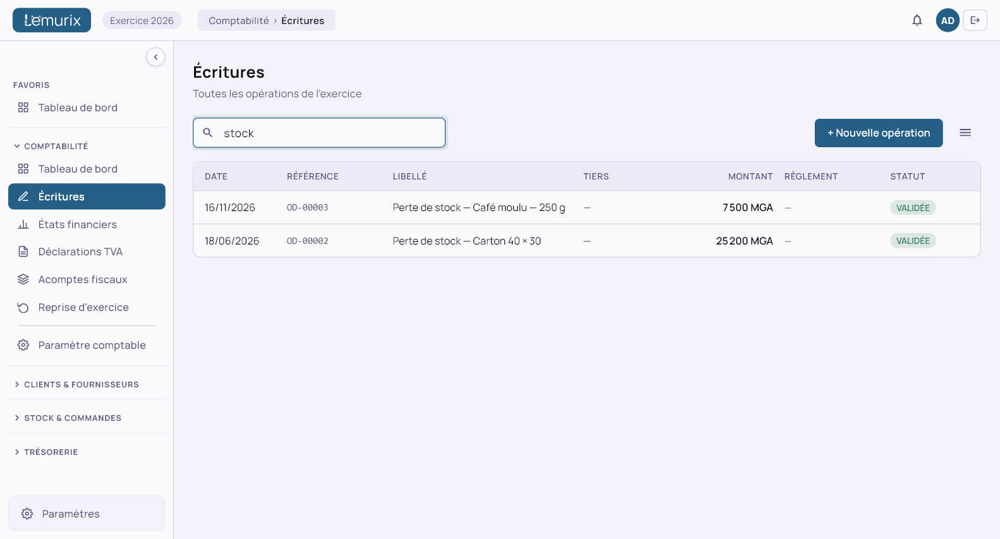
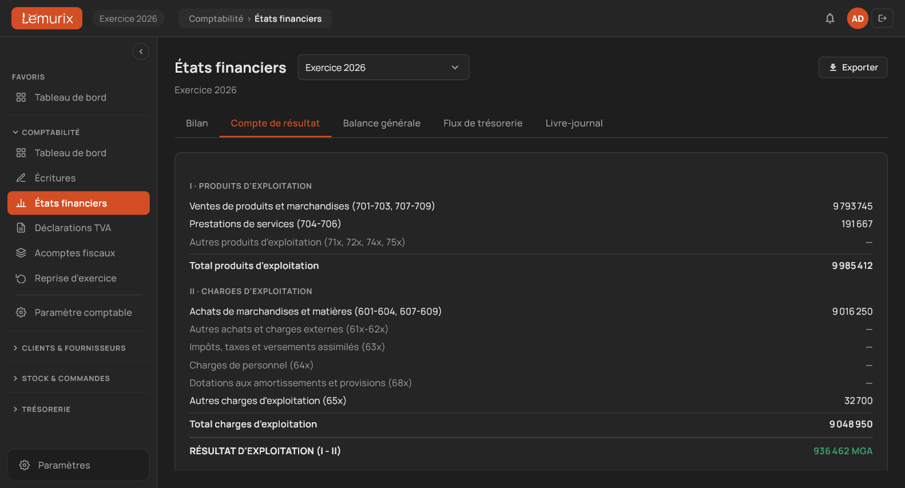
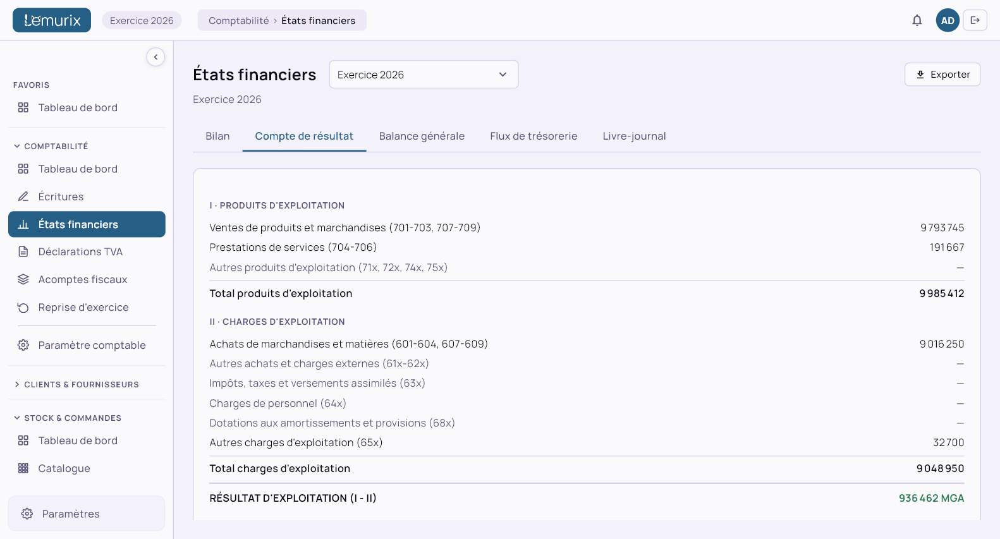
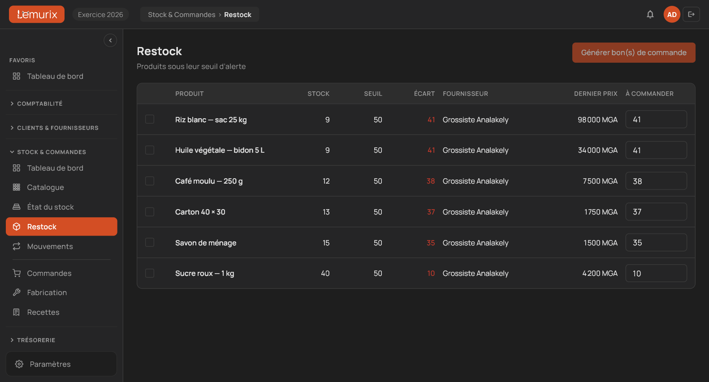
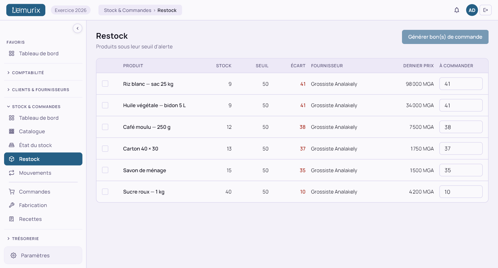

Lemurix : testez une application de gestion pour petites entreprises
Stock, clients et comptabilité sur votre ordinateur. Elle fonctionne sans internet.
Version de test · Windows 10 ou 11 · Test gratuit pour les testeurs


Vous enregistrez une perte de stock, l’écriture se crée toute seule
Une perte de stock ou un ajustement d’inventaire, et l’écriture comptable correspondante est créée pour vous.
Données d’exemple




Un compte de résultat et un grand livre à montrer à votre comptable
Vos états financiers s’exportent en PDF et en Excel, pour les montrer à votre comptable.
Données d’exemple


Voyez ce qu’il reste en stock et ce qu’il faut recommander
Lemurix signale les produits sous leur seuil d’alerte et vous permet de générer des bons de commande.
Données d’exemple


Lemurix ne remplace pas un comptable, ne calcule pas vos impôts et ne fait aucune déclaration à l’administration.
Trois étapes
-
Télécharger
Sur la page des versions, choisissez le fichier qui se termine par
installateur.exe. Aucun compte nécessaire. -
Installer
Windows peut afficher « Windows a protégé votre ordinateur » : Lemurix n’a pas encore de certificat d’éditeur reconnu (il est payant). Cliquez sur « Informations complémentaires » puis « Exécuter quand même ». Si vous hésitez, écrivez-moi avant.
-
Tester avec des exemples
C’est une version de test : la base peut être remise à zéro d’une version à l’autre, n’y mettez pas encore vos vraies données.
Vous êtes sur téléphone ?
Lemurix fonctionne sur Windows. Envoyez-vous ce lien pour l’installer depuis votre ordinateur.
Qui suis-je
Je m’appelle Karl. J’ai créé Lemurix pour aider les petites entreprises à tenir une comptabilité plus simple et plus claire. C’est une version de test : je cherche des testeurs, et votre avis compte plus que tout.
Test gratuit pour les testeurs
Le test est gratuit pour les testeurs. C’est une version de test : la base de données peut être remise à zéro d’une version à l’autre, n’y mettez donc pas encore vos vraies données d’entreprise. Utilisez des exemples tirés de votre activité.
Construit avec l’IA, vérifié par des tests
Lemurix a été développé avec l’aide d’une intelligence artificielle (Claude, d’Anthropic). J’ai apporté les idées, les choix de produit, les tests et des phases de contrôle. Aucun professionnel de la comptabilité n’a encore validé le logiciel : c’est justement pour cela que j’ai besoin de testeurs.
Me contacter
WhatsApp : 038 68 817 08
Pour un problème, dites-moi : où vous étiez, ce que vous avez fait, ce que vous attendiez, ce qui s’est passé. Une capture d’écran aide beaucoup (touches Windows + Maj + S). Je ne peux pas promettre de délai de réponse, mais je lis tout.
Questions fréquentes
C’est gratuit ?
Le test est gratuit pour les testeurs. Aucun tarif ni offre n’est annoncé pour l’instant.
Puis-je y mettre mes vraies données ?
Pas encore : c’est une version de test, la base peut être remise à zéro.
Où sont mes données ?
Sur votre ordinateur. Par défaut, rien ne le quitte. Une option, désactivée par défaut, permet d’envoyer une sauvegarde chiffrée à un serveur situé hors de Madagascar : pour le test, ne l’activez pas.
Est-ce que ça calcule mes impôts ou fait ma déclaration ?
Non. Lemurix ne remplace pas un comptable.
Est-ce que ça marche sans internet ?
Une fois installé, oui.